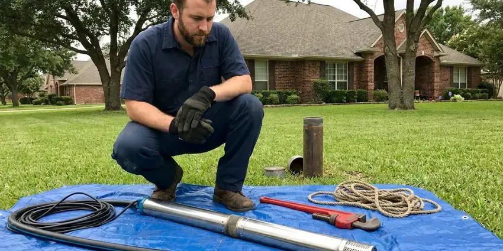

Well Pressure Tank Replacement in Lahaina, HI
Dealing with inconsistent water pressure or a constantly running well pump in Lahaina, HI? Our expert plumbers specialize in efficient well pressure tank replacement.
- Fair Pricing
- Upfront Pricing
- Fast Pressure Tank Swaps
- Pre-Charge Set to Switch

Steady Well Pressure Starts With a New Tank in Lahaina, HI.
Our experienced technicians are ready to diagnose and replace your well pressure tank with minimal disruption to your home.
Your Go-To for Well Pressure Tank Replacement in Lahaina, HI
HKL Plumbing installs a new tank tee, pressure gauge, relief valve and pressure switch as part of a complete replacement. We set the tank's air pre-charge two psi below the switch cut-in so the system runs evenly.
Our expertise includes:
- Air pre-charge adjustment and cycle time testing
- Handle well pump and pressure switch integration.
- Diagnose and replace all well pressure tank types.

Additional Plumbing Replacement Services in Lahaina, HI
When repairs are no longer enough, our replacement services in Lahaina, HI deliver durable upgrades that restore full performance.




Professional well pump replacement, Lahaina


Customers
Why Choose HKL Plumbing for Well Pressure Tank Replacement in Lahaina, HI?
Choosing the right professionals for well pressure tank replacement is essential for the long-term health of your well system. Our team understands the real demands of well water systems in Hawaii.
- Code Compliance, Every well pressure tank replacement we perform adheres closely to Hawaii plumbing codes and safety regulations, preventing future issues.
- Transparent Pricing, We provide honest, upfront estimates for all well pressure tank replacement services, so you know the cost before any work begins.
- Full Testing, We check pre-charge, cut-in and cut-out pressure and actual run time before leaving.
Citywide Coverage
HKL Plumbing proudly serves every neighborhood in Lahaina for well pressure tank replacement. Whether you're in an established neighborhood or a new development, our local plumbers are ready to assist.
Experienced Team
Our team has replaced many well tanks, from 20 gallon units to large 119 gallon models. That experience helps us get pre-charge and switch settings right the first try.
Safety-First Approach
We always put first safety and code compliance during well pressure tank replacements. Our technicians carefully check for proper grounding, pressure relief, and system integrity to prevent hazards.
Trusted Certified Lahaina Plumbing Services Professionals
At HKL Plumbing, we take pride in providing certified plumbing services throughout Lahaina, HI. Backed by leading industry credentials, our experienced plumbers combine technical skill with genuine customer care. Whether it is repair, installation, or maintenance, we follow strict safety and quality standards to deliver lasting results you can trust.
Call Us Now PHCC Plumbing Contractor Recognition
PHCC Plumbing Contractor Recognition Better Business Bureau (BBB) Accreditation
Better Business Bureau (BBB) Accreditation Angi Certified Pro
Angi Certified Pro ISO 9001 Quality Management Certification
ISO 9001 Quality Management CertificationTrusted Well Pressure Tank Replacement Services in Lahaina, HI
Tank Tee, Gauge and Relief Valve Replacement in Lahaina
The tank tee is the manifold that connects the tank, switch, gauge, relief valve and drain. Galvanized tees corrode and choke flow, especially with sandy or mineral-heavy water. We replace them with brass or stainless steel tank tees that hold up much longer. A new liquid-filled gauge gives accurate readings, and a fresh relief valve protects against a stuck switch. These small parts make a big difference in how well the system holds up.

Cost-Effective Well Pressure Tank Upgrades in Lahaina, HI
Beyond simple replacement, HKL Plumbing also offers cost-effective well pressure tank upgrades for Lahaina homeowners looking to improve their well system's efficiency and longevity. Upgrading to a larger capacity tank can significantly reduce well pump cycling, saving energy and extending the pump's lifespan. We can assess your current water usage and system needs to recommend the most useful upgrade, ensuring a smart investment that pays off in reduced utility bills and fewer repairs over time.
Pressure Switch Replacement in Lahaina, HI
The pressure switch tells the pump when to start and stop, typically at 30/50 or 40/60 psi. Pitted contacts, insect nests and a clogged sensing nipple are frequent causes of failure in well houses. We replace worn switches with Square D or similar models and clean or replace the nipple below it. A low-pressure cutoff switch can also be added to stop the pump if the well runs dry. We set the switch to match your new tank's pre-charge.
Well-Rite Pressure Tank Installation in Lahaina, HI
Well-Rite pressure tanks are a popular choice known for their reliability and durable construction, featuring heavy-duty steel shells and high-quality butyl diaphragms. At HKL Plumbing, we regularly install Well-Rite tanks as part of our well pressure tank replacement services in Lahaina. These tanks are designed to provide consistent water pressure and reduce pump cycling, extending the life of your well pump. We ensure proper sizing and installation of Well-Rite tanks, adhering to manufacturer specifications for full performance and warranty validity.
Well-X-Trol Pressure Tank Installation in Lahaina, HI
HKL Plumbing is experienced in installing and replacing leading well pressure tank brands, including Well-X-Trol. These tanks are known for their quality construction and reliable performance across a wide range of water conditions. Our plumbers ensure proper sizing and installation of Well-X-Trol tanks, maximizing your well system's efficiency and lifespan.
Emergency Well Pressure Tank Replacement in Lahaina
A sudden loss of water pressure or a completely failed well pressure tank can be an emergency, especially for rural homes around Lahaina that depend solely on well water. HKL Plumbing offers emergency well pressure tank replacement services to address these urgent situations quickly. Our technicians are available to assess the problem and perform the necessary replacement to restore your water supply as soon as possible, preventing prolonged inconvenience and potential damage to your well pump from overworking.
Pressure Switch & Gauge Integration in Lahaina, HI
A well pressure tank replacement often involves inspecting and, if necessary, replacing the associated pressure switch and pressure gauge. These components are critical for regulating your well pump's operation and monitoring system pressure. Our plumbers in Lahaina, HI ensure all these elements work together seamlessly for a fully functional and efficient well water system.

Commercial Well Pressure Tank Services in Lahaina, HI
Commercial properties in Lahaina with private well systems also rely on dependable pressure tanks for their water supply. HKL Plumbing offers specialized well pressure tank replacement services for commercial applications, understanding the higher demands and larger capacities often required. We work to minimize downtime and disruption to your business operations, installing robust, commercial-grade tanks that can handle continuous heavy use and maintain consistent pressure across your facility, from irrigation to internal plumbing systems.
Well Pressure Tank Replacement Near Me in Lahaina, HI
Homeowners across Lahaina rely on HKL Plumbing for professional well pressure tank replacement. We pride ourselves on being a community-focused plumbing company, ready to serve your neighborhood with experienced technicians and quality parts. Call us today to experience the difference.
When you search for 'well pressure tank replacement near me' in Lahaina, HI, HKL Plumbing is your go-to local expert. We prioritize fast, reliable service to address your well system issues without delay. Our proximity allows us to respond quickly to your service calls.
HKL Plumbing at a Glance
- Licensed and insured plumbers serving Lahaina, HI
- Same-day appointments and 24/7 emergency response
- Upfront, flat-rate pricing before work begins
- 4.8-star rated by 529+ Hawaii customers
Lahaina Map
Lahaina Information
- Population
- 12,702
- Area codes
- Local
- Service area
- Lahaina and communities within 40 miles
- Nearby
- Wailuku, Kahului, Kihei, East Honolulu
For homes in Lahaina, HI, a reliable well pressure tank is essential, especially when changing temperatures stress well systems, making proper installation key for longevity and performance.
Expert Services
Trust our professionals for reliable HKL Plumbing solutions in Lahaina, HI.
Our Specialized Plumbing Services in Lahaina, HI
At HKL Plumbing, we provide a complete range of plumbing services across Lahaina, HI. From leak detection to full system installations, our team ensures fast, precise, and affordable service for both residential and commercial properties. Explore our core services below:


How Our Well Pressure Tank Replacement Process Works in Lahaina, HI
At HKL Plumbing, we follow a consistent, systematic approach to well pressure tank replacement, delivering a reliable and long-lasting solution for your Lahaina, HI property.
Request a Quote
Call (808) 649-6718 or fill out our online form to schedule an appointment. We'll discuss your well pressure tank symptoms and schedule a professional assessment.
On-Site Assessment
Our technician will visit your Lahaina home to diagnose the well pressure tank issue, confirm it needs replacement, and recommend the best new tank for your system.
Expert Installation
We will carefully remove your old tank and install the new one, ensuring all connections are secure, the system is properly charged, and tested for full performance.
Frequently Asked Questions About Well Pressure Tank Replacement in Lahaina
The cost for well pressure tank replacement in Lahaina, HI usually ranges from $700 to $1,800, depending on the tank size, brand, and complexity of the installation. This includes the tank itself, labor, and any necessary fittings. We provide a detailed quote after assessing your specific system needs.
A new well pressure tank primarily helps maintain consistent water pressure and reduces pump cycling. If your current low pressure is due to a failing or undersized tank, a replacement will clearly improve the consistency and feel of your water flow. However, if the issue is with the well pump itself or a clogged pipe, other solutions might be needed.
It depends on your pump's flow rate and the drawdown needed for at least a one minute run time. We calculate this on site instead of going by the old tank.
While it might seem like a DIY project, well pressure tank replacement involves working with pressurized water, electrical components, and ensuring proper sizing and calibration. It is highly recommended to hire a professional plumber to ensure safety, code compliance, and proper system function.
Common signs include your well pump repeatedly turning on and off (short cycling), fluctuating water pressure, air sputtering from faucets, or a tank that is waterlogged (feels heavy when tapped and full of water). If you notice any of these, it is time for an inspection.
Common signs include your well pump cycling on and off very often (short-cycling), fluctuating water pressure at your faucets, no water coming from the tap, or a waterlogged tank when you tap on it. Visible rust or leaks around the tank are also obvious indicators.
In most areas, a permit is not usually required for a like-for-like well pressure tank replacement. However, if there are significant changes to the well system or its location, a permit might be necessary. We will advise you on any permitting requirements for your specific situation in Lahaina.
Most pressure tank replacements take two to four hours. Adding a constant pressure system or multiple tanks can take most of a day.
What People Are Saying About Our Plumbing Experts?

Laura S.
I scheduled a water heater replacement, and the team made the process smooth and affordable. The new unit works perfectly, and they cleaned up after completing the job.
Water Heater Replacement · East Honolulu, HISofia M.
Two new toilets installed in one visit, no mess left behind, and the tech even adjusted a faucet he noticed was dripping. Fair pricing and really friendly.
Toilet Installation · Kihei, HI
Patricia H.
We had a slab leak that two other companies could not find. HKL Plumbing located it in under an hour, explained our options, and the price matched the quote to the dollar.
Slab Leak Repair · Kaneohe, HI
Emily R.
I called HKL Plumbing for plumbing repair, and the technician was fast, polite, and thorough. They explained the problem clearly and fixed it the same day. I will definitely hire them again. Highly recommended!
Plumbing Repair · East Honolulu, HI
Daniel K.
A pipe burst at 11 pm and they actually answered. The plumber showed up within the hour, shut everything down, and had us back to normal the next morning. Could not ask for more.
Emergency Plumbing · Kaneohe, HI
James P.
Our commercial plumbing system had a leak under the sink, and HKL Plumbing handled it professionally. The plumbers arrived quickly and restored everything without disruption to our customers.
Commercial Plumbing · Kailua, HI